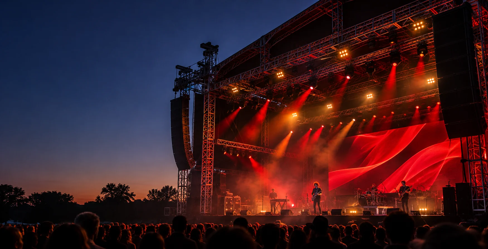
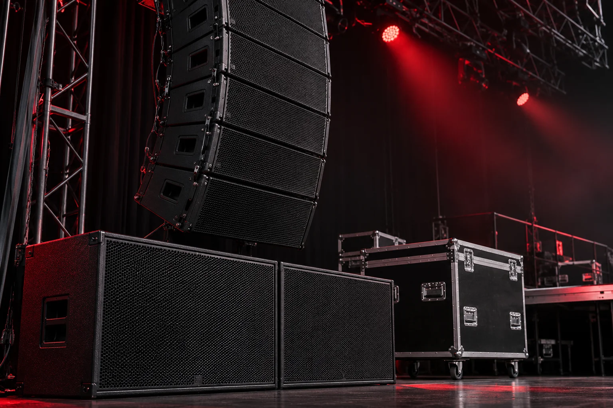
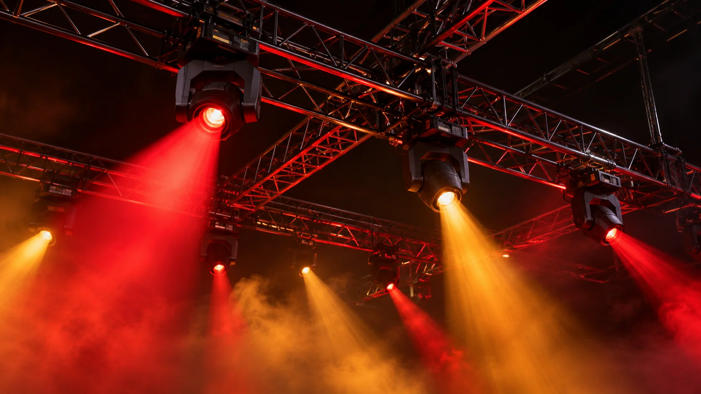

01 / Experiência
Som, luz & vídeo
Áudio, iluminação, vídeo, ecrãs LED e estruturas truss.
Uma das empresas mais experientes de Portugal em som, luz e vídeo. Desde 1992, nos bastidores dos grandes eventos e festivais do país.
Experiência nos grandes palcos. O mesmo rigor e dedicação em cada evento.

Áudio, iluminação, vídeo, ecrãs LED e estruturas truss.

Aluguer de material audiovisual para eventos e produções.

Venda e integração de soluções para espaços e instalações.
Fundada em 1992, a Décibel é uma das empresas mais experientes de Portugal no setor audiovisual. Com presença em quase todos os grandes eventos e festivais do país, trazemos para cada produção mais de três décadas de conhecimento no terreno.
Do festival ao evento corporativo, do espetáculo à instalação permanente, aliamos equipas técnicas experientes e equipamento profissional de som, luz e vídeo. Sabemos o que cada palco exige — e como fazer acontecer.
Conte-nos o que está a preparar. A nossa equipa ajuda a encontrar a solução certa.
Dias úteis · –